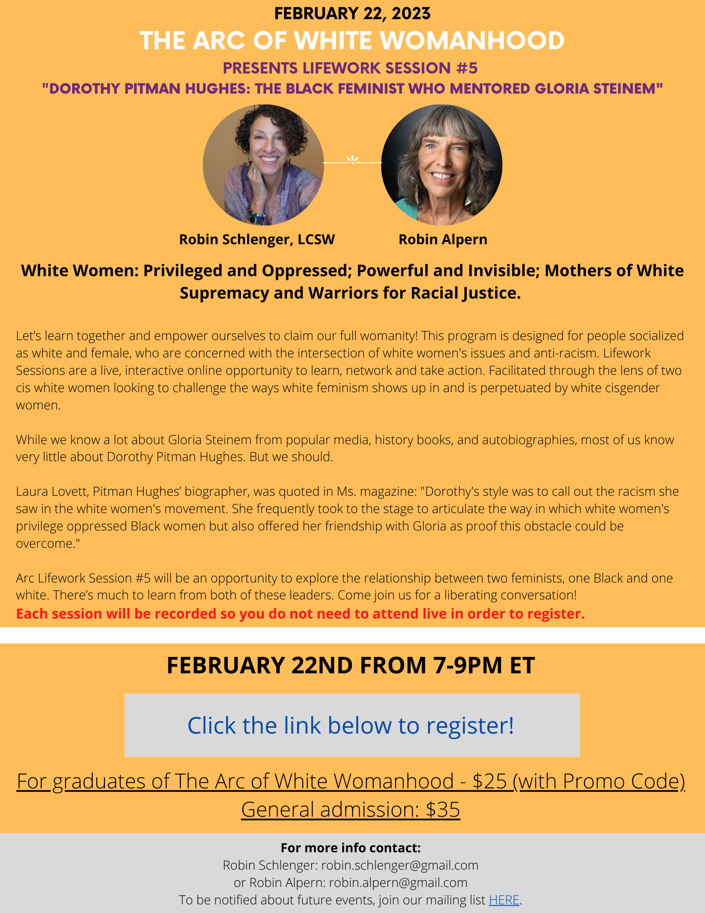

2023-01-23
What Are You Doing To Build And Stretch Your Anti Racist Muscles
I don’t make New Year's resolutions. Instead, I reflected on what I learned in 2022; how and where I grew, and how and where I did not show up as the person I want to be.
One of the many things I have learned about white supremacy is that it pulls us out of relationships with ourselves as well as others. That is why I’m committed to making time for myself while also building and nurturing my relationships. Much of my work day is spent talking, texting, and emailing. I realize that I have gotten caught up in the thralls of white supremacy’s demand to be productive at all costs. I have let myself forget that the people I talk and email with are other human beings. White supremacist culture would have us believe that it's more important to produce and make money than it is to be in relationships with each other. I don’t want to do this anymore!!! I don't want to forget my own humanity while also forgetting the humanity of others.
I also am embracing more opportunities to lean into my growing edges. Let me use a metaphor about working out: When I start a new exercise program by trying to do too much too soon, I will most likely get physically hurt, feel defeated and give up. Starting this month, I made a commitment to do it differently. I do a little more each day; this helps me avoid injury, build confidence, and stamina to stay in it for the long haul. It's the same way I build and stretch my anti-racist muscles, too.
What are you doing to build and stretch your anti-racist muscles?
See you on the journey,
Robin

The Eikenberg Academy for Social Justice presents “The Saturday Series on Race": Exploring the Enduring, Invisible and Ubiquitous Centrality of Whiteness. Discussions hosted by Dr. Kenneth V. Hardy.
Rev. David Billings (Author of Deep Denial) shares his memories of Anne Braden, a “Civil Rights shero."
leaders in the Civil Rights Movement (CRM). SOC’s purpose was to keep stressing organizing as a fundamental principle of effective social change. Its members felt organizing’s importance to social change work must always be kept front and center, especially in the minds of activists. The founders of SOC urged activists not to succumb to quick programmatic temptations as the obvious “next steps” to the incredible victories that organizing had brought about in the aftermath of Brown v. Board in 1954. They knew it was mass-based organizing that had made the CRM happen and that it was such organizing that would continue to be the necessary foundation for any future victories. They wanted to train organizers who could move about the South and keep the Movement going. Anne always had a strong cadre of local organizers who worked with her in different towns and cities across the South. She did not want to be seen as a “public intellectual.” Whether it was with Mattie Jones in Louisville, Judy Hand and Scott Douglas in Birmingham, or Gloria Furmin and Ron Chisom in New Orleans, she knew how important networking was in her organizing. Jim Dunn would say, “We must build a net that works.” Click HERE to continue reading…
Memories of Anne Braden, by David Billings - Martin Luther King Jr. Day - January 15 2023: I knew Anne Braden from the mid 1970’s until her death in March 2006. Of course, I knew of her before then. She was an icon of the Civil Rights Movement. I was aware she was mentioned by the Rev. Martin Luther King, Jr. in his “Letter from a Birmingham Jail” which was written in April, 1963. I had heard how she and her husband Carl Braden were from Louisville, Ky. and both had been charged with sedition by the State of Kentucky for buying a house in a segregated white neighborhood of Louisville and then selling it to a Black couple. The Bradens were convicted under State sedition statutes and Carl Braden actually served time. One of the things I have never forgotten about Anne is how throughout her life she stood by Carl. She would say “Carl and I were a team. I just happened to have lived a much longer life. But we were a team. I became better known. Had Carl lived as long as I have, we would have both been well known.”
I first met Anne at S.O.C. meetings. “SOC” was how everyone referred to the Southern Organizing Committee for Economic and Social Justice which Anne helped found in the 1970’s, along with Rev. C.T. Vivian and other organizers who had been
People’s Institute of Survival and Beyond: Undoing Racism and Community Organizing - Registration link on PISAB.ORG
January 2023: 27-29 (Friday to Sunday)
February 2023: 18-20 (Saturday to Monday)
March 2023: 1-3 (Wednesday to Friday); 24-26 (Friday to Sunday)
April 2023: 11-13 (Tuesday to Thursday); 28-30 (Friday to Sunday)
May 2023: 11-13 (Thursday to Saturday); 19-21 (Friday to Sunday)
June 2023: 8-10 (Thursday to Saturday); 21-23 (Wednesday to Friday)
July 2023: 12-14 (Wednesday to Friday); 25-27 (Tuesday to Thursday)
August 2023: 8-10 (Tuesday to Thursday); 24-26 (Thursday to Saturday)
September 2023: 14-16 (Thursday to Saturday); 22-24 (Monday to Wednesday)
October 2023: 7-9 (Saturday to Monday); 20-22 (Thursday to Saturday)
November 2023: 11-13 (Saturday to Monday); 16-18 (Thursday to Saturday)
December 2023: 1-3 (Friday to Sunday); 10-12 (Sunday to Tuesday)
The Center for the Study of White American Culture: https://cswac.org/upcoming-workshops/